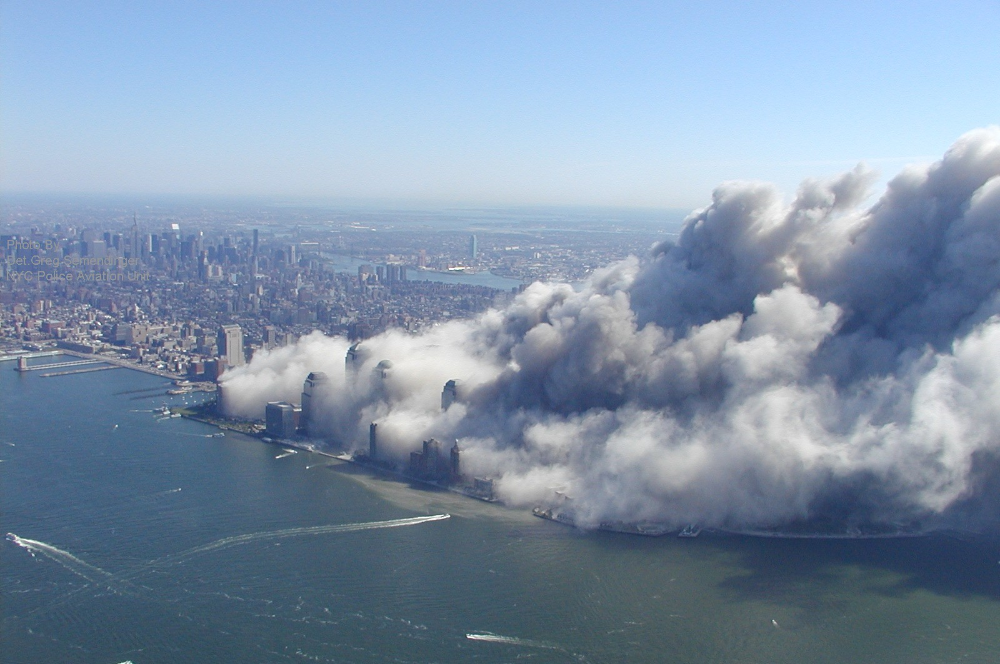
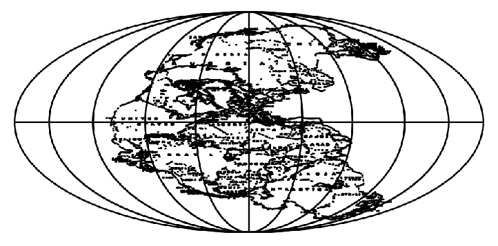

Europe, one of the sophisticated social environments [1] humankind has developed during the Anthropocene, is facing a political backlash. [2] Noting down a not-so-latent, almost peaking tendency towards right-wing and conservative politics, [3] the book of relevant observations becomes heavier and heavier. The mode of operation becomes more sophisticated, we’re lost in connotations, the air to breathe is way thicker and our sight only takes us around the next corner, as if a sour rain is dripping on the foreheads. There is a war going down on the narratives of humanity and there is a lot – and a lot more – of brave activists and citizens bracing themselves against skepticism, hate and grief.

Cloud of Dust after-WTC

Microsphere Image of WTC Dust
What this planet feels like at the moment, comes very close to an artwork of surrealist and dadaist Max Ernst. Indeed political developments seem surreal and regarding politics society appears disconnected from within. Max Ernst, by some people, was seen as a nutcase; an undisciplined thinker; but many more did not oversee his exceptional gifts and his power to startle and provoke. [4] In 1933, after national-socialists took over power in post-war Germany, an objet-trouvé occurred made by him. What is the story behind this piece? It starts with the surrealist movie L’Âge d’Or Max Ernst was part of. [5] Max Ernst’s role was to play the leader of the men — in fact, some bunch of ragged bandits. The screenplay of L’Âge d’Or was written by Salvador Dali and Luis Bunuel. The movie was such a controversy that it eventually provoked fascist groups to go on a serious rampage against it. During a screening at a famous cinema in Paris, some hooligans wrecked the theatre and it’s interiors, ultimately leading to the suppression of the movie by the police chief. This interesting anecdote has nothing to do with the artwork itself in the first place, but certainly positions the movie in the political spectrum. L’Âge d’Or was about individual desire and the rejection of power. The production budget of a million francs came from a nobleman who yearly commissioned a film as a birthday gift to his wife. L’Âge d’Or is a black comedy piece soaked in religion, pushing against power-constructs that work to oppress individual desire. Those who benefit from the oppression are spotless mannequins, insensitive to the imagination and the inner life. Using sex and desire as an “agent of chaos”[6]
and driving force for the screenplay, the movie’s essential message is to disrespect any barrier and disobey any law. It is told that Max Ernst, during the shot—maybe shooting at or throwing around some enemies—realized some irregularly plastered and painted boards, that were used as walls on set. After playing the leader of ragged bandits in the movie, being outside his role, he recognized the same boards in the garbage after the scenes were finished. He took the plywood that was left behind and painted three pictures on them. One of them is Europe After Rain I.
Alchemists had a secret language that allowed them to pass on their research over centuries. What the profound alchemist did is turning base metals into gold. Furthermore, they put meaning into the basic elements and the mutations they created in order to create knowledge. Essentially, he or she creates a change in value. Max Ernst himself refers to his body of work as visual alchemy too. What a visual alchemist like Max Ernst does then, is mixing several techniques and materials—in case of Europe After Rain it was oil, gypsum, collaging— in order to mutate a simple, pragmatic object into another. By doing so, he shifted the object’s belongingness through purposefully adding layers, color, borders, and relief, leading to a meaningful surplus. This process led to plywood changing into a speculative map of Europe, foreseeing consequences of nationalism and populism with landscapes and borders out of place. The work’s autonomy might rose with the chaos, which has been central to it. Europe After Rain I might have been a consequence of the eros of L’Âge d’Or. Both works alike do not respect any barrier or obey any law.
In Europe After Rain II the artist Max Ernst already processes the peaking violence and incredible forces that went down on Europe from a much closer perspective. Painting Europe as a traumatized and ruined landscape, the observer already notices the on-going mechanics and consequence of war: the painting is full of deformation. Notice the rusty and used color palette, see the few naked, disappearing bodies as vanishing desire and the bird-human (Max Ernst’s Alter Ego) as a broken citizen of a free world that has been taken away. Whether it be the surreal landscape resembling the street view of a bombed and destroyed avenue somewhere, or whether it be the bone-like structures representing lifeless human and animal bodies, Europe After Rain II it is full of death and dark, twisted transformation, certain negativity absorbing any desire. The painting, in fact, is the most horrible painting one can look at and should be memorized very well.
Eventually, the war was over, resources we’re down and the trauma was huge. The hearts and minds, the bodies that carried them and the structures the kept them flowing, were ready for healing. Being ripped apart and traumatized for too long, having relentlessly given hope and resources to a rapid end of WWII, the post-war period is marked by a hunger for far more rational choices, some universal rules to be applicable for anyone. Humankind was desiring a new age of togetherness. What could have been the repair for that global crack which appeared? The hippie movement: a peaceful counterculture obsessed with a rational universalism. An obsession perfectly intertwined with Earthrise in 1968 and Blue Marble in 1972, the first iconic images of Earth from space sparked awareness of our very planetary boundaries, giving evidence and justification for a rational universalism driven by science and knowledge. An obsession for self-optimization and self-improvement was born, which is an incredible shift after experiencing years of global war and trauma, simply exploitation by all means. Especially Blue Marble completely flipped the correlation between human and planet. Not only, but it was also bullet-proof that the earth is not a disk. Moreover, people all over the world started questioning the relationship humans had with each other and further which relationship humankind had with its planet. Eventually, the field of ecology became a serious topic. It is the first longer period in the 20th century where men and women all over the world thought about the planet’s resources, how humankind and civilization are essentially exploiting it for its well-being and well-functioning. Both Blue Marble and Earthrise do mark a period of eco-driven content published by Stewart Brand, which we aspire, reject or simply know as Whole Earth Catalogue, still being famous and well received in 2018. If there hasn’t been any common lecture for the universal movement before, the Whole Earth Catalogue did provide it, eventually fuelling the discourse on climate and eco-responsibilities, feminism, self-care by creating and inspiring a solid do-it-yourself culture. It is said that this book changed the way humankind understood its habitat. An internet before the internet, giving people answers on how to do it themselves. [7] It is the hippie culture, resisting the ‘ragged bandits’ in power still leading countries into conflict, resisting a military complex becoming established after WWII, resisting the petite bourgeoisie. Their autonomous thinking lead towards an era of political radicalism, pointing at the togetherness of things and people, raising questions we can now find answered in our society. [8]
Regarding the current developments in polity, these achievements must have been declared as invalid. It must seem like all the knowledge coming from several scientific perspectives has never existed. So it might be the best of times for knowledge, but also the worst of times. [9] Political extremes and their storytellers have taken over on our abilities and removed what has been taken for granted. On a cognitive level, these stories might focus only on truth or belief. It is not enough to simply know something or believe in something. The theory of knowledge tells us that only the deduction of both can result in knowledge. Knowledge-based on one or the other turns into a flourishing ground for either skepticism or flatness. We have to acknowledge science as a deduction of both—truth and belief—so we can profoundly call something knowledge. A primer providing us with ideas of unity, togetherness, indifference and helping us growing greater than we are.
What is it now that gives us back the power to improve ourselves in times of trouble? How can we make use of the multiplicity of knowledge? Regarding populism, nationalism, racism, gender phobia and sexism, will human potential unfold into a movement growing greater than we are? Knowing the fact that all the knowledge of the world lies in our hands, how can we zoom back in? What could that wizardry be? Something profoundly transformative from what the west invented as the oriental middle-east? [10] Or from another place within our own borders, but no one ever dares to go? Are these men and women even trustworthy enough? Are they good or bad? Do they believe in the same thing? What is their sexual preference? How do they reproduce? Are the stories they are telling true? Will they overcome us? Even if, are they disciplined enough to do so? As long as humans reject the most universal ideas in their closest environments and instead stay suspicious of anything odd, strange or unrelated, no one will have an answer to that. It is not a coincidence that you’ll find globes in libraries. Knowledge is universal. Without encountering the other and the unknown, society will fall into insignificant pieces soon enough. Can we imagine a new world, a Pangea celebrating humankind and togetherness? Or, must humankind celebrate its cognitive death?
In his paper, A Geology of Media Jussi Parikka writes about materiality as a ground for media and culture. According to Parikka, “the human being is primarily a ‘so-called Man’ formed as an aftereffect of media technologies.” [11]
By creating an alternative media materialism he first distinguishes between materialism and idealism when we refer to technology:“do we refer to it as the opposite of spiritual or ethical (as in expressions of disgust toward the materialist aspects of consumer society) or refer to the reality of machines and technology that structure our lives.”
In a spiritual or ethical sense, we can start questioning our media consumption and the side effects that come with it. Addiction, leading to serious states of depression and anxiety. Dependence, on certain platforms or manufacturers of media and its devices. Owing to the great stories we’re getting told and the aesthetics around it, our ability to believe in perfection is tapped. Who is sure to not fall for a sublime piece of rare earth powered by a lifetime lithium battery? Should we rather accept an accelerated reality and make platforms a good place? How could we raise awareness for media usage in a technological era? Can technology be any good in times of trouble? Can we walk together in real life too?
Luis Ortega Govela and Olivia Erlanger investigate the history of the garage, with their book Garage, Hate & Suburbia. The Garage, a room which would shift its usage through years and decades, to become a multipurpose room: storing irrelevant objects, fixing the lawnmower and a place to be for yourself with a beer. It was the perfect place for retreat. “Cleansing the mind of how things should be, to think about how they could be, the garage offered the safe ground for an illusion to grow in private before they could be challenged.”[12]
During the ‘60s and ’70s, when society was fed by spiritualism, counterculture and do-it-yourself attitude no one else than Steve Jobs “operated within delusion, manipulating his existence into a new identity.”[13]
Did a reality distortion field pop up with the garage? What was its influence on human development? Founding their enterprise in a garage, it was the place where Steve Jobs and Frank Wozniak could forget about reality and envision technology and how it could be. By now we are spending considerable amounts of time and money on that technology that was born in the garage. The garage, where one can be for himself, isolated, gave birth to technologies that provide us with a strange mix of closeness and distance. As if technology has embodied the garage, we can be alone while being together, when using it. Steve Jobs alike sat in the garage on his own, maybe with his friend Steve Wozniak, perhaps very close to the living room that has been robbed of its communal function for the family. Instead, he chose to stay in the reality distortion field. Instead, he left everything behind to work relentlessly on his visionary ideas that shall make the world a better place. What did Steve Jobs actually mean when he said it just works. — the garage and the reality distortion field? The garage just works the endless self-update. As if there is nothing else to win or lose, to think or laugh about. About living in the suburbs, Olivia Erlanger states, “ there was no culture, there were no people, there was nothing but the inside of a car and potentially driving somewhere to get high away from parents, teachers, and ultimately ourselves.”
Given the hyper-normalized suburban culture, given the garage, later the technology embodying garage-ism, it became a concept of hyper normalcy, escapism, and loneliness. Steve Jobs thought he had done counter-culture, a radical do-it-yourself endeavor, leading to liberation and progress. Somehow it didn’t turn out that way, but any big company that was a start-up once, is still romantically bathing in narratives of how small they started and how family-like their working environments are. Behind the back, they make big money. Is this how counterculture is eventually swallowed by capitalism and conservatism? Isn’t it what the garage spirit tried to overcome in the ‘60s and ‘70s? Does it all come back now? Who will try again on these premises?
Sadly, in the political landscape, we can recognize how a mode of isolation is used to make it hard for other people to change themselves, change their social status, change their homes and destinations. What is so wrong about it? Does it correlate to the isolated architecture where pioneering technology has been invented? Technology that has been misused for political warfare later on. Did the architecture of the creator become the architecture of the user? Can technology distort the user’s mind and thus the political landscape?
Technology and its sublime can certainly be a trickster, fuelling truth and belief. [14] Minimizing the difficulty of using technology, increasing its parameters, added surplus level of lightness and powerfulness, that made it easy fostering discouragement and resentment against human achievements. Gifted with the ability to create and use technology, where should humankind go from now on? How is it spirited? Where do humans position themselves? Can we stop bottling up? Shall we all be in the garage and isolate? Like, together? How could the architecture of the user look like? What shall it produce? Can the ego’s nature shift from isolation towards togetherness?
What if media materialism is not something that hones in on the machines only? [14] Forgetting to know ourselves, we need to invest research into the resources we’re using and on the geology of it. That material underlying the plates we live upon, does it interfere with us? Is it possible to extract conclusions on the influence on human behavior? And even if, will humanity be ready for it?
In the book, Rare Earth Nadim Samman opens the dialogue with the reader by questioning what separates moments of human endeavor from each other? History and science give us measurable evidence. Binding those materials into a flexible map for pragmatic knowledge of existence, humans can mutate, navigate and investigate beyond current horizons. [15]
The term of psycho-geophysics, re-introduced by Jussi Parikka in his publication A Geology of Media in 2015, describes a field of speculative knowledge or aesthetics where technology and society are combined with a specific perspective on the geophysical. The trajectory of this conceptual ground refers to geology: a science about the ground beneath our feet. Its history and constitution, the systematic study of the various levers, layers, strata, and interconnections that define the earth. [16] Talking about these interconnections means to track down which materials are used, that built our hyper-individualistic phantasies and fuels the ego. User interfaces and experiences are created in industrialized manners. Coming in shapes calculated and designed with software running on plates and batteries deriving from the same materials, which they’re supposed to bring in shape again. Some inorganic entity which we create out of rare earth and lithium, to establish and keep up our daily routines and relationships. Are we connected to the specific materials, coming from anonymous mines, dug out by anonymous workers?
Urging for individuality in the technological era is necessarily demanding the constant production of new media and devices. Whether it be to replace an older product or to make it better in itself, its process includes geo-trauma and climate change. But we want to show ourselves all the time and be connected while being in the individual bubble. Do we have to? We hold the privilege of togetherness in our hands, the sacred common ground of our times and could do more useful things than just presenting ourselves. It is a matter of awareness and how far one is willing to question himself. Further, the platforms we’re virtually moving and connecting on do not provide a sense of communal togetherness. Of course, this is how platforms sell themselves, hence triggering a human instinct, but this is not what it is. Moreover, it is a digital privilege that does not exist everywhere in the world. And necessarily, this placebo for real-life togetherness has to have its industrial fundament from somewhere else than where it is sold. Slavery just works. The price: while geo-traumatizing the planet, we are exploiting labor resources in countries such as Chile, Australia, Portugal, China, Australia, Russia, Brazil, Thailand, India, Malaysia, Vietnam [17] and in African countries, [18] where children dig with their bare hands after materials the industry is desperately craving for. This backdrop, not only in the 21st century, is usually taken for granted or carefully kept at a distance. We’re using a lot of resources for progress and perfection. Our user ego creates a demand on limited resources that cannot be satisfied forever. If we think of connectedness in terms of transportation, humans are adding up to the planetary trouble as well, since new technologies for new mobilities highly depend on lithium and copper. Along with other rare earth materials for user interfaces that will be necessary to create the experiences the mobility industry will have developed for us. We can find deep mining wholes all over the planet caused by our desire for feeling better and perfect. It necessarily brings humankind steadily further into climate change and turns the planet into a geo-traumatized subject.
Throughout centuries, the relationship between slavery and freedom creates wealth and power on one hand. Poverty and exploitation on the other. Whenever we create global constructs, explore new horizons, dream the dreams of perfection, we do it in such a manner, that individual costs are high for those who are unseen. Thinking of other plantations, Hank Willis Thomas, African-American concept artist, born 1976, tangles the problematic relationship between corporate culture and black slavery, especially in the context of African-American or Black people.
Regarding corporate aesthetics, we’re supposed to fall for day by day, artist and Liverpool native Kate Cooper critically investigates the relationship with consumer aesthetics that “encompasses digital bodies, the language of mass-advertising and a move beyond representation.”[19]
Engaging with the audience her work is labeled with the glossy aesthetics of consumer capitalism, which have a certain effect. We find them especially in TV commercials or video game graphics. [20] They immediately trigger some physical and aesthetic attraction. Kate Cooper uses capitalist materials, coming from deep mines, transformed into shiny products. She re-assembles them in an exaggerated manner and through redirecting polished aesthetics she gives evidence to capitalist mannerism. Are we triggered mannequins? We may have to find ways of resisting consumer aesthetics that come with the advertisements, artworks, products, and self-representations we find on around every corner and supremely on digital platforms.
In Platform Capitalism, Nick Srnicek comments the rise of platform-based businesses as a necessity of capitalism to ensure its survival, which it is not capable of by traditional means. He refers to monopolistic enterprises basing their business on collecting, controlling and using mass data to achieve economic dominance. The model is drawn upon an insatiable thirst for data, premised upon bringing different groups together. [21] This works perfectly for some, but especially troublemakers from the arts and culture might not find the togetherness since their agenda is rather multiple and based on rather abstract values that cannot be measured. As a business client, you have a certain plan, a certain aesthetic, which makes using the platform a measurable endeavor. Go online and grow your practice, put out your work, make contacts, get commissioned. Platforms are designed as a mechanism for extracting and using their data. [22] Providing the infrastructure and intermediation between different groups, platforms place themselves in a position in which they can monitor and extract all the interactions between these groups. Platform capitalism is using the human urge of togetherness, creating a construct and human flow. Within our urge of not being alone, in our urge for kinship and friendship, feeling alien to the circuit of self-representation, we’re steadily exploiting our planet and ourselves. As much as the mass-production of digital technology is problematic to our planet, the dependence of platform capitalism is to humans. It is trying to tell us what to wear when to work out, what music to listen to, which concert to visit – creating a lifestyle according to data that has been collected about us. This will make demands on how we position ourselves as members of a consumer society. Basically which path to take and where to put yourself in the spectrum of modern realities, regarding questions of relationships, income, housing, and mobility. If we want to find forms of resistance, how can such a resistance look like without neglecting the technological reality? Shouldn’t we all have a purposeful and good intended online life? Couldn’t the user and consumer architecture be a little different? Should we use platforms in specific ways only? What would total collectivism look like?
Staying absent on all channels may lead to depressing isolation, a nostalgic return to nature to anachronism. On one hand, we don’t need another update. On the other, we don’t have to delete our profiles or cause a break-down of platforms. [23] Our dependency on such technology definitely influences the communal and collective spirit in real life by creating a singularity. No doubt, that we need to make use of such, but we might rethink our manners. Are there other ways than Facebook to know what is happening around my location? Why do I need Instagram to know what my friends are doing? Do we need more group chats to feel togetherness or should we improve our language and how we treat each other day by day? Are we really celebrating kinship and friendship or are we trying to do the right things in the wrong way?

Assembled by: Jan Husstedt
Supervision Writing: Füsun Türetken,
Dirk Vis (Second Opinion)
Supervision Design: Matthias Kreutzer
(Our Polite Society)
Supervision Code: Jan Robert Leegte,
Silvio Lorusso
Special Thanks to Füsun Türetken for leading me through this thesis, Matthias Kreutzer for the good and encouraging words, Dirk Vis, Jan Robert Leegte and Silvio Lorusso for simplifying the process.
Fonts in Use: Favorit (Dinamo), Favorit Lining
(Dinamo), Favorit Mono (Dinamo), Ginto Nord
(Dinamo), Ginto Normal (Dinamo)
Special Thanks to Florian Harb &
Johannes Breyer
Bibliography
Adams Bellows, Henry (1936): The Poetic Edda. Edwin Mellen Press Ltd
Bartlett, Jamie Birdwell & Jonathan & Litter, Mark (2011): The New Face of Digital Populism. Retrieved from: https://www.demos.co.uk/project/the-new-face-of-digital-populism/
Beckett, Andy (2017): Accelerationism: How a fringe philosophy predicted the future we live in. Retrieved from The Guardian https://www.theguardian.com/world/2017/may/11/accelerationism-how-a-fringe-philosophy-predicted-the-future-we-live-in
Bennhold, Kathrin (2018): Chemnitz Protest Show New Strength of Germany’s Far Right. Retrieved from New York Times https://www.nytimes.com/2018/08/30/world/europe/germany-neo-nazi-protests-chemnitz.html
Buckminster Fuller, Richard (1968): Operating Manual For Spaceship Earth. Amereon Limited
Cohen, Roger (2016): The Politics of Backlash. Retrieved from NY Times https://www.nytimes.com/2016/04/05/opinion/the-politics-of-backlash.html
Cadwalladr, Carole (2013): Stewart Brand’s Whole Earth Catalog, the book that changed the world. Retrieved from The Guardian https://www.theguardian.com/books/2013/may/05/stewart-brand-whole-earth-catalog
Deleuze, Gilles & Guattari, Felix (1988): A Thousand Plateaus, Capitalism and Schizophrenia. Merve
Erlanger, Olivia & Govela, Luis Ortega (2018): Garage. Massachusetts Institute of Technology Press
Fareiss, Lukas (2015): Der Traum von der Reise zum Mond. Spector Books
Gruzinski, Serge (2012): Kader Attia: The Repair. Retrieved from: https://universes.art/de/nafas/articles/2012/kader-attia-documenta/
Hall, Stuart (1988): Difference and Contestation, New Ethnicities. Retrieved from: https://www.amherst.edu/media/view/88663/original/Hall%2B-%2BNew%2BEthnicities.pdf
Harari, Yuval Noah (2015): Why humans run the world. Retrieved from https://www.youtube.com/watch?v=nzj7Wg4DAbs&t=31s
Haraway, Donna (2016): Staying with the Trouble: Making Kin in the Chthulucene. Duke University Press
Haraway, Donna (2016): Tentacular Thinking: Anthropocene, Capitalocene, Chthulucene. Retrieved from E-Flux https://www.e-flux.com/journal/75/67125/tentacular-thinking-anthropocene-capitalocene-chthulucene/
Hawks, Howard (Screenplay) Christian Nyby (Director)(1951): The Thing From Another World. [Film] RKO Radio Pictures
Interkultur Ruhr (2018): 7. Kulturkonferenz Ruhr: Notizen einer Teilnehmerbeobachtung. Retrieved from: https://interkultur.ruhr
Jansen, Jos (2018): Universe / Facts in the post-truth era. FineBooks (Jos Morree)
Khan Academy (2011): Pangaea | Earth geological and climatic history | Cosmology & Astronomy. [Video] Retrieved from:https://m.youtube.com/watch?v=axB6uhEx628
Klossowski de Rola, Stanislas (2013): Alchemy, The Secret Art. Thames & Hudson
Krastev, Ivan (2017): After Europe. Suhrkamp Verlag
Kubrick, Stanley (Director & Producer)(1968): 2001: A Space Odyssey. Metro-Goldwyn-Mayer
Laboria Cuboniks (2015): Xenofeminism,
A Politics for Alienation. Retrieved From LC http://www.laboriacuboniks.net/20150612-xf_layout_web.pdf
Lauwaert, Maaike & van Westrenen, Francine (2017): Facing Value, Radical Perspectives from the Arts. VALIZ & STROOM DEN HAAG
McKay, Robin (2011): A Brief History of Geotrauma or: The Invention of Negarestani.[Video] Retrieved from archive.org
Moore, Jason (2015): Capitalism in the Web of Life, Ecology and the Accumulation of Capital. Verso
Morton, Timothy (2016): The pnek files: Dark Ecology. Retrieved from: http://www.pnek.org/wp/wp-content/uploads/2016/03/Pnek-Files-Dark-Ecology-2.pdf
O’Donoghue, Darragh (2013): L’Âge d’Or. Retrieved from Senses Of Cinema http://sensesofcinema.com/2013/cteq/lage-dor/
Parikka, Jussi (2015): A Geology of Media (Electronic Mediations). University of Minnesota Press
Russell, John (1976): Max Ernst, Catalytic Figure in 20th Century Art, Dies. Retrieved from New York Times Archive https://archive.nytimes.com/www.nytimes.com/learning/general/onthisday/bday/0402.html
Said, Edward (1978): Orientalism. Routledge
Spivak, Gayatri (1988): Can the Subaltern Speak? Retrieved from Turia http://www.turia.at/pdf/inh_spivak.pdf
Transmediale (2018): Outro. [Instagram Story Highlight] Retrieved from Instagram Transmediale https://www.instagram.com/stories/highlights/17886480583271847/?hl=de
United Nations, DESA (2015): World population projected to reach 9.7 billion by 2050. Retrieved from: http://www.un.org/en/development/desa/news/population/2015-report.html